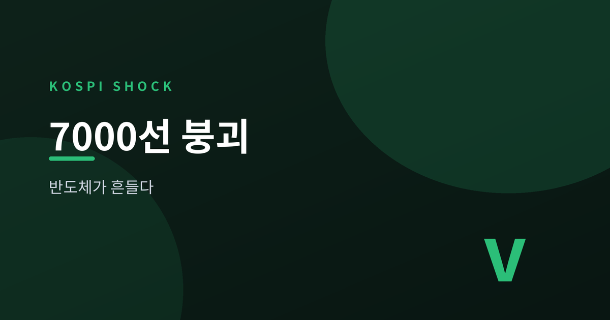
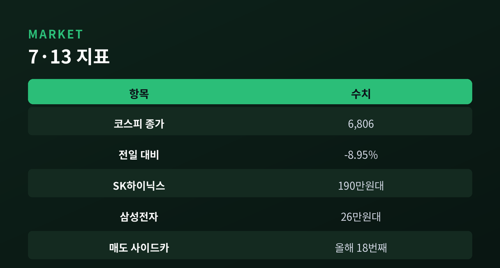
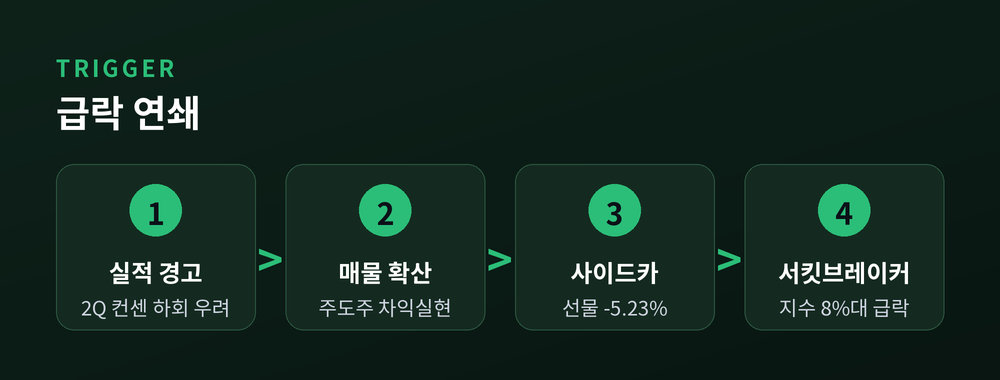
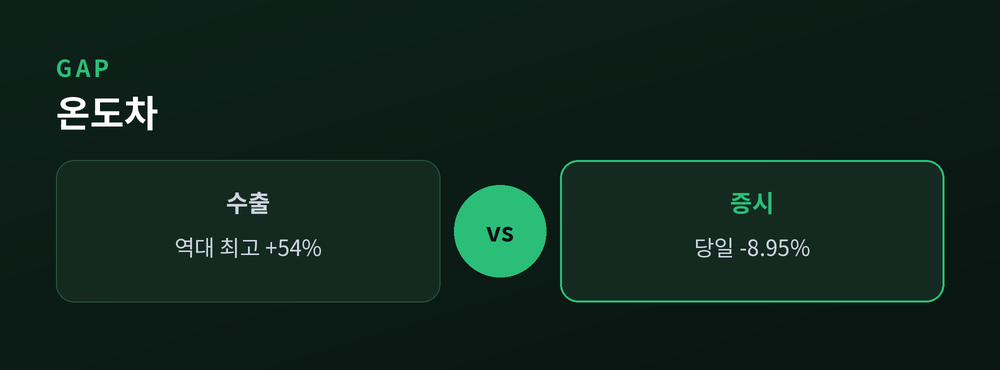
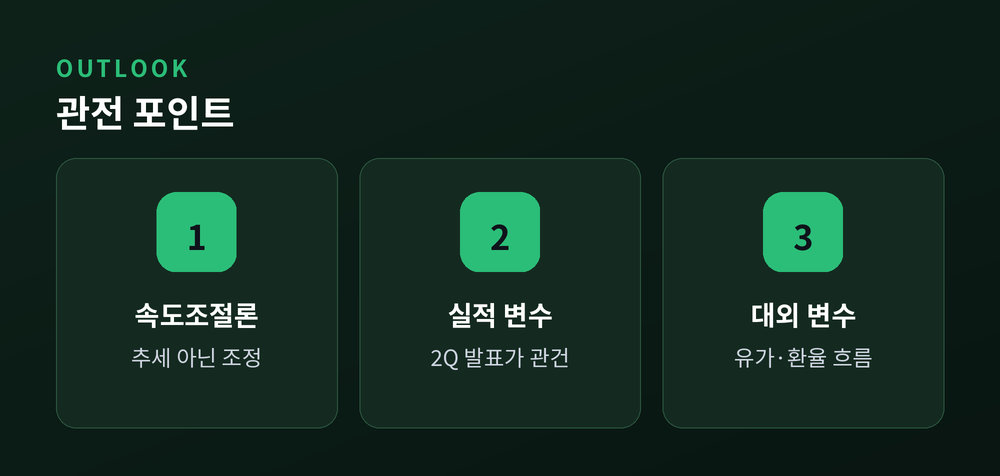

반도체가 흔들리자 지수도 무너졌습니다

7월 13일, 코스피가 두 달 만에 7000선 아래로 내려앉았습니다. 반도체 대형주가 한꺼번에 무너지면서 지수는 장중 급락했고, 매도 사이드카에 이어 서킷브레이커까지 발동됐습니다. 무슨 일이 있었는지, 왜 중요한지, 앞으로는 어떻게 볼지 차분히 짚어 보겠습니다.
이날 코스피는 전 거래일보다 약 8.95% 내린 6,806대로 마감했습니다. 지난 5월 처음 7000선을 밟은 지 약 두 달 만의 후퇴입니다. 낙폭을 키운 것은 시가총액 최상위 반도체주였습니다. SK하이닉스는 12%가량 급락해 '200만닉스'가 깨지며 190만 원대로 내려왔고, 삼성전자도 7%대 떨어져 26만 원대에서 거래됐습니다.
장중 코스피200 선물이 급락하자 한국거래소는 오전 10시 34분 매도 사이드카를 발동했습니다. 발동 당시 선물지수는 약 5.23% 하락한 상태였습니다. 이어 지수가 8% 안팎까지 밀리며 서킷브레이커가 걸려 거래가 일시 중단되기도 했습니다.

방아쇠는 실적 경계감이었습니다. 일부 증권사가 SK하이닉스의 2분기 영업이익이 시장 컨센서스를 밑돌 수 있다고 지적했고, 2026~2027년 이익 추정치도 하향했습니다. 그간 지수를 끌어올린 주도주였던 만큼, 눈높이 조정이 곧바로 대규모 차익실현으로 번졌습니다.
여기에 대외 변수가 겹쳤습니다. 주말 사이 호르무즈 해협을 둘러싼 미국과 이란의 갈등이 다시 불거지며 국제 유가가 급등했고, 위험자산 회피 심리를 자극했습니다. 프로그램 매물이 쏟아지자 사이드카가, 낙폭이 커지자 서킷브레이커가 순서대로 발동됐습니다.

"지수는 무너졌지만, 실적이라는 토대까지 무너진 것은 아닙니다."
역설적이게도 실물 지표는 정반대였습니다. 7월 1~10일 수출은 약 298억 달러로 같은 기간 기준 역대 최대를 기록했습니다. 1년 전보다 53.9% 늘었고, 무역수지도 약 64억 달러 흑자였습니다.
특히 반도체 수출이 112억 달러로 전년 동기 대비 193% 급증해 전체 수출의 약 38%를 차지했습니다. AI 인프라 투자 붐에 메모리 고정가격이 뛴 결과입니다. 실적은 뜨거운데 주가는 얼어붙은 셈이니, 이번 하락이 '펀더멘털 훼손'이라기보다 '과열 부담의 되돌림'이라는 해석에 무게가 실립니다.

증권가의 시선은 엇갈립니다. 다수는 이번 조정을 추세 전환보다 '속도 조절'로 봅니다. HBM 실수요가 올해 95% 늘 것으로 전망되는 등 메모리 호황의 골격은 유지되고 있다는 근거입니다. 다만 변수는 남아 있습니다. 실제 2분기 실적이 우려를 확인시킬지, 유가·환율 같은 대외 여건이 어디로 흐를지가 관건입니다.
결국 관전 포인트는 '이익'입니다. 실적 발표가 눈높이를 되돌려 준다면 반등 여지가 있지만, 기대가 꺾인다면 조정은 길어질 수 있습니다.

이 글은 정보 제공을 위한 해설이며, 특정 종목의 매수·매도 등 투자 권유가 아닙니다.
정리하면, 실물은 역대급 호황을 이어가는데 증시는 하루 만에 두 달치 상승분을 되돌렸습니다. 숫자의 크기보다 방향의 어긋남이 더 눈에 띄는 하루였습니다. 지수의 급락이 성장의 종료를 뜻하는지, 잠깐의 숨 고르기인지는 다가올 실적이 답해 줄 것입니다.
참고 소스